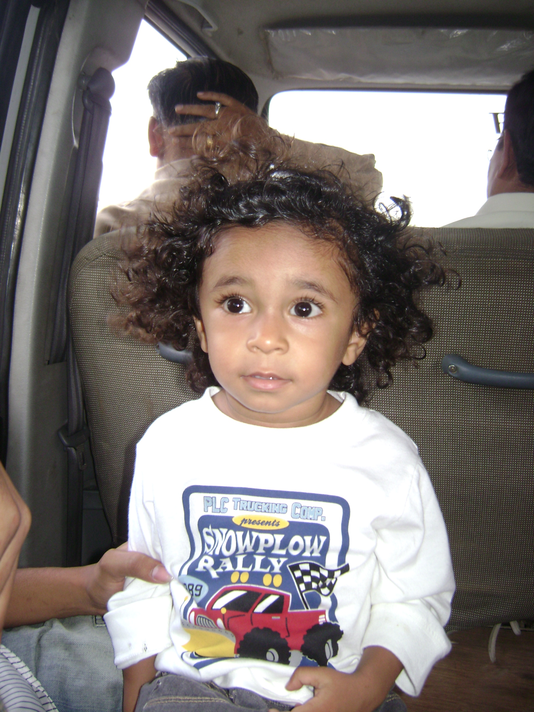

Welcome to my portfolio! I am a passionate web developer with a keen interest in creating dynamic and responsive web applications. My journey in web development started with a fascination for technology and design, and it has evolved into a full-fledged career.
I specialize in front-end development, focusing on HTML, CSS, and JavaScript to build user-friendly interfaces. I also have experience with back-end technologies, allowing me to create full-stack applications.
In my free time, I enjoy exploring new technologies, contributing to open-source projects, and enhancing my skills through continuous learning.